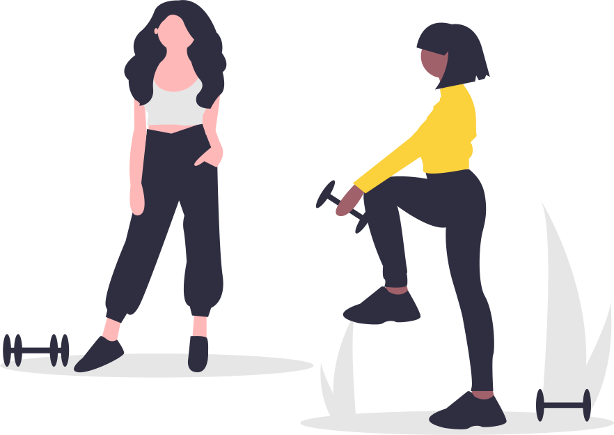

<div class="about">
  <div class="container">
    <h2 class="about__title">こんなことありませんか？</h2>
    <p class="about__text">
      Twi-ProはTwitterを利用し、当日の行動をフォロワーの方々に宣言する事で
    </p>
    <p class="about__text">
      「必ずやり遂げよう」というあなたの気持ちを後押しするサービスです。
    </p>
    <div class="about__grid">
      <div class="about-card">
        <p class="about-card__title">できることを仕事に</p>
        <p class="about-card__text">習い事・ものづくりなど</p>
        
      </div>
      <div class="about-card">
        <p class="about-card__title">1人ではやる気が出ない…</p>
        <p class="about-card__text">Twitterで宣言をすることで応援してもらえます</p>
        
      </div>
      <div class="about-card">
        <p class="about-card__title">先延ばし癖がある…</p>
        <p class="about-card__text">その日中に達成しないと恥ずかしいツイートが流れてしまうかも…！</p>
        
      </div>
    </div>
  </div>
</div>
